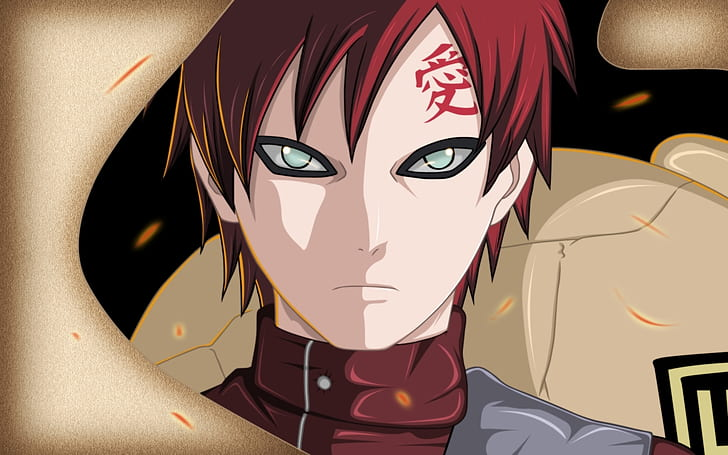

Naruto Uzumaki is a shinobi of Konohagakure's Uzumaki clan.
He became the jinchūriki of the Nine-Tails on the day of his
birth — a fate that caused him to be shunned by most of
Konoha throughout his childhood. After joining Team Kakashi,
Naruto worked hard to gain the village's acknowledgement all
the while chasing his dream to become Hokage. In the
following years, through many hardships and ordeals, he
became a capable ninja regarded as a hero both by the
villagers, and soon after, the rest of the world, becoming
known as the Hero of the Hidden Leaf. He soon proved to be
one of the main factors in winning the Fourth Shinobi World
War, leading him to achieve his dream and become the
village's Seventh Hokage.

Gaara is a shinobi of Sunagakure. He was made the
jinchūriki of the One-Tailed Shukaku before he was born,
causing the villagers of Suna to fear him as a monster.
With nobody to connect to, Gaara grew up hating the
world and looking out only for himself, giving his life
meaning by killing anyone he came across. After being
defeated by Naruto Uzumaki — a jinchūriki like himself
who found strength in his friendships — Gaara starts
emulating him. He becomes Suna's Fifth Kazekage so that
he can protect the village and all those who live there,
dispelling the fears he cast on the villagers.
Sasuke Uchiha is one of the last surviving members of
Konohagakure's Uchiha clan. After his older brother, Itachi,
slaughtered their clan, Sasuke made it his mission in life
to avenge them by killing Itachi. He is added to Team 7 upon
becoming a ninja and, through competition with his rival and
best friend, Naruto Uzumaki, Sasuke starts developing his
skills. Dissatisfied with his progress, he defects from
Konoha so that he can acquire the strength needed to exact
his revenge. His years of seeking vengeance and his actions
that followed become increasingly demanding, irrational and
isolates him from others, leading him to be branded as an
international criminal. After learning the truth of his
brother's sacrifice, later proving instrumental in ending
the Fourth Shinobi World War, and being happily redeemed by
Naruto, Sasuke decides to return to Konoha and dedicate his
life to help protect the village and its inhabitants,
becoming referred to as the "Supporting Kage".